فصل دهم — تشخیص ناهنجاری: از دادهٔ پرت تا تصمیم قابل دفاع#
درس دادهکاوی — کارشناسی ارشد مهندسی کامپیوتر
مسئلهٔ محوری: در میان هزاران تراکنش مالی یا اندازهگیری یک سامانه، چگونه رویدادهایی را پیدا کنیم که «واقعاً سزاوار بررسی» هستند؛ بیآنکه هر مقدار بزرگ را تقلب، هر خطای سنسور را خرابی، یا هر تغییر طبیعیِ الگو را ناهنجاری بدانیم؟
دریافت فایلهای آموزشی: PDF فصل دهم · سورس XeLaTeX و شکلها · کد Python · Notebook اجراشده · دادهٔ تراکنش ساختگی · سیگنالهای زمانی ساختگی. همهٔ دادهها برای آموزش تولید شدهاند؛ هیچ دادهٔ فردی واقعی، API یا کلید دسترسی لازم نیست.
اهداف یادگیری و نقشهٔ استدلال#
دانشجو پس از پایان این فصل باید بتواند: (۱) ناهنجاری نقطهای، زمینهای و جمعی را بهدقت تعریف کند؛ (۲) تفاوت ناهنجاری، اشتباه ثبت، رویداد نادر و رخداد واقعاً نامطلوب را توضیح دهد؛ (۳) میانه، MAD، چارک و مرزهای Tukey را دستی حساب کند؛ (۴) امتیاز فاصلهٔ همسایهٔ \(k\)ام و LOF را گامبهگام بهدست آورد؛ (۵) نقش کوواریانس در فاصلهٔ ماهالانوبیس را بفهمد؛ (۶) امتیازهای آماری، مبتنی بر مجاورت، بازسازی و جداسازی را مقایسه کند؛ (۷) اثر زمینه و ترتیب زمان را در تشخیص نشان دهد؛ (۸) CUSUM و پنجرهٔ علّی را محاسبه کند؛ (۹) محدودیت دادهٔ پُربعد و آلودگی مرجع را تشخیص دهد؛ و (۱۰) با معیارهایی متناسب با بودجهٔ بررسی، سامانهٔ هشدار را بدون نشت اطلاعات ممیزی کند.

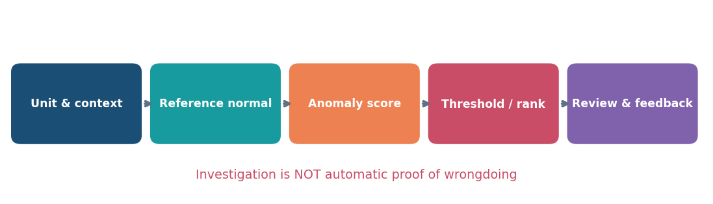
Fig. 150 شکل ۱۰ـ۱. زنجیرهٔ تحلیل: تعریف واحد مشاهده و زمینه، ساخت مرجع، محاسبهٔ امتیاز، انتخاب آستانه و بازبینی انسانی. هشدار الگوریتم معادل اثبات تقلب نیست.#
جایگاه موضوع در دو مرجع اصلی#
مبنای فصل، Han, Pei & Tong, Data Mining: Concepts and Techniques, 4th ed.، فصل ۱۱: Outlier Detection، بخشهای ۱۱٫۱ تا ۱۱٫۷، صفحات چاپی ۵۵۷ تا ۶۰۰ و Tan, Steinbach, Karpatne & Kumar, Introduction to Data Mining, 2nd ed.، فصل ۹: Anomaly Detection، بخشهای ۹٫۱ تا ۹٫۹، صفحات چاپی ۷۰۳ تا ۷۴۲ است. تعریف نوع ناهنجاری و پیوند با روشهای مجاورت/بازسازی را از هر دو منبع ترکیب کردهایم؛ اهمیت ارزیابی و هزینهٔ هشدار در Tan برجسته است، و مفهوم ناهنجاری زمینهای، جمعی و دادهٔ پُربعد در Han سازمانیافتهتر آمده است. مثال عددی، تصاویر، طرح ممیزی و دادهها تألیفی هستند. CUSUM در این جزوه ابزار تکمیلی مهندسی پایش است و بهعنوان محتوای اختصاصی فصلهای یادشدهٔ دو کتاب ادعا نمیشود.
۱۰ـ۱. آغاز با یک مسئلهٔ واقعی: آیا مبلغ بزرگ، مشکوک است؟#
سامانهای را فرض کنید که در هر سطر، شناسهٔ تراکنش، شناسهٔ حساب، گروه مقایسهٔ مشتری، ساعت و مبلغ را ثبت کرده است. پژوهشگر میخواهد از میان حجم زیادی رویداد، تعداد محدودی را برای کارشناسی انتخاب کند. اگر فقط «بزرگترین مبلغها» را فهرست کنیم، تراکنش عادیِ یک مشتری عمدهفروش ممکن است بالاتر از تراکنش غیرمعمولِ مشتری خرد باشد. بنابراین پرسش درست معمولاً «این رویداد نسبت به چه مرجع و چه زمینهای غیرعادی است؟» خواهد بود، نه فقط «آیا مقدار آن زیاد است؟».
در فایل events_synthetic.csv تعداد ۳۰۰ تراکنش ساختگی با دو گروهِ retail و business و یک شناسهٔ حساب ساخته شده است. ستون synthetic_truth_for_evaluation_only صرفاً حقیقت ساختگیِ تزریقشده برای آزمون آموزشی پس از محاسبهٔ امتیازها است. در تولید امتیاز زمینهای، مرجع بهصورت «۲۰۰ رویداد اول بر اساس زمان قراردادی فایل» گرفته شده و این برچسب در ساخت مرجع استفاده نمیشود؛ بااینحال همین مرجع ممکن است آلوده به رویداد غیرعادی باشد. در محیط واقعی، برچسب اغلب با تأخیر، ناقص و وابسته به سیاست بررسی در دسترس است.

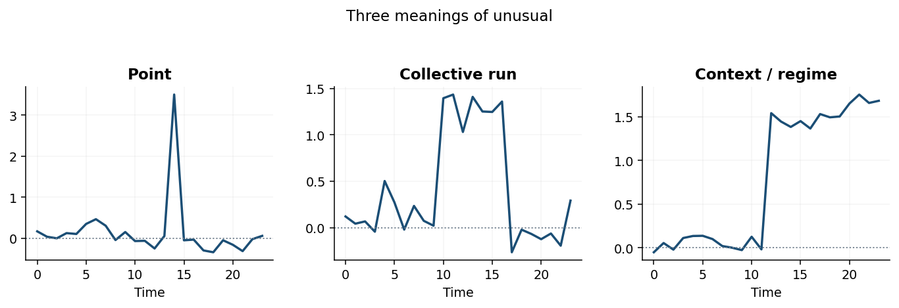
Fig. 151 شکل ۱۰ـ۲. ناهنجاری تکنقطهای، دنبالهای از انحرافهای نسبتاً کوچک و تغییرِ زمینه/رژیم، سه مسئلهٔ متفاوتاند.#
وحدت مشاهده: اگر یک حساب ۱۰ تراکنش دارد، واحد آموزش میتواند «تراکنش» و واحد تقسیم دادهٔ ارزیابی میتواند «حساب» باشد. رعایت نکردن این تفاوت سبب میشود اطلاعات یک حساب از بخش آموزش به آزمون نشت کند. همچنین باید تعیین کنیم آیا میخواهیم تراکنشِ غیرعادی، حسابِ غیرعادی یا یک توالیِ غیرعادی را کشف کنیم؛ این سه، تعریف یکسانی از ناهنجاری ندارند.
۱۰ـ۲. چه چیزی ناهنجاری است و چه چیزی نیست؟#
ناهنجاری (Anomaly/Outlier) مشاهده یا ساختاری با ناسازگاری محسوس نسبت به الگوی مرجعِ مشخص است. این تعریف عامدانه «تقلب» یا «خطا» را در خود ندارد. یک مقدار دورافتاده ممکن است: خطای ورود داده، تغییر واحد اندازهگیری، وضعیت نادر ولی مجاز، خرابی واقعی، حمله، یا آغاز رفتار تازهٔ عادی باشد. خروجی سامانهٔ تشخیص معمولاً امتیاز ناهنجاری است و تفسیر علت، نیازمند شواهد تکمیلی است.
در کشف بدون برچسب (Unsupervised)، بیشتر دادهها را معمول تصور میکنیم یا ساختار غالب را میآموزیم. در آشکارسازی نیمهنظارتیِ نوآوری (Novelty detection)، غالباً دادهٔ مرجعِ عادی را جداگانه جمع میکنیم. در حالت نظارتشده، مثالهای برچسبدارِ هر دو گروه موجودند؛ این حالت از نظر تعریف به طبقهبندی نزدیکتر میشود. برای هر کاربرد باید روشن شود کدام فرض عملی برقرار است؛ نباید صرفاً نام «بینظارت» را بر هر مدلِ بدون ستون هدف گذاشت.
ندرت بهتنهایی کافی نیست: عددی که بهدلیل تعطیلات رسمی در یک روز خاص کمتکرار شده، ممکن است کاملاً قابل انتظار باشد. برعکس، خرابکاریای که بارها تکرار میشود میتواند از دید آمار شمارشی «معمول» جلوه کند؛ پس تعریف ناهنجاری نسبت به هدف پایش و سیاست بازخورد تغییر میکند.
۱۰ـ۳. گونهها: نقطهای، زمینهای و جمعی#
در ناهنجاری نقطهای یک رکورد در مقایسه با جمعیت مرجع دور میافتد: مثلاً مبلغ ۴۸ در دادهای که بیشتر مقادیر ۱۰ تا ۱۵ هستند. در ناهنجاری زمینهای رکورد در کل جمعیت عادی به نظر میرسد، اما نسبت به همگروهها، ساعت یا شرایط محیطی نامعمول است: تراکنش ۹۰ واحدی برای یک گروه ممکن است معمول و برای گروه دیگر غیرعادی باشد. در ناهنجاری جمعی تکتک نقاط الزاماً دورافتاده نیستند، ولی الگوی مشترک آنها عجیب است؛ مانند افزایش پایدار و آرام دمای دستگاه در چند بازه.

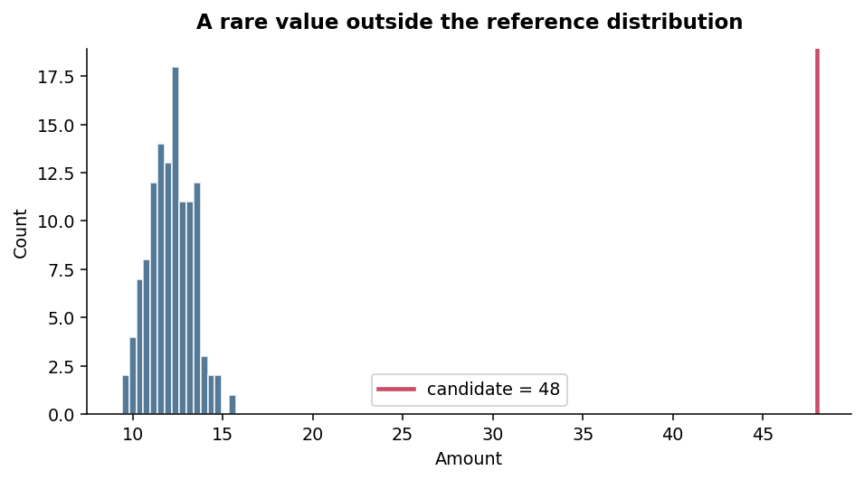
Fig. 152 شکل ۱۰ـ۳. مشاهدهٔ ۴۸ نسبت به توزیع مرجع بهوضوح دور است؛ اما علت آن فقط با بررسی دادهٔ زمینهای روشن میشود.#
برای هر نوع، امتیاز و واحد قضاوت متفاوتی مناسب است. در ناهنجاری جمعی، آستانهٔ مستقلِ هر نمونه ممکن است همهٔ عناصر توالی را عادی تشخیص دهد. در ناهنجاری زمینهای، مدل جهانی بدون ویژگیهای شرایط کار ممکن است هشدارهای کاذب ایجاد کند. معیار ارزیابی هم باید با واحد هشدار هماهنگ باشد؛ یک رخداد دنبالهای را نباید صرفاً به تعداد نقاط تشکیلدهندهاش چند بار شمرد.
۱۰ـ۴. امتیاز، رتبه و آستانه سه مفهوم متفاوتاند#
فرض کنید \(s(x)\) یک تابع امتیاز باشد که مقدار بزرگتر یعنی غیرعادیتر. با مرتبکردن \(s\) میتوان بهترین \(k\) مورد را برای بررسی انتخاب کرد. اما برای هشدار قطعیتر به آستانهٔ \(\tau\) نیاز داریم: \(\widehat{y}(x)=\mathbf{1}[s(x)\ge\tau]\). امتیاز، احتمال نیست؛ مثلاً عدد LOF برابر ۳ را نمیتوان «احتمال ۳۰۰ درصدِ تقلب» نامید. حتی امتیازهای برآمده از احتمال آماری، تا هنگام تعریف مناسب فرضیات و کالیبراسیون، احتمال وقوع تخلف نیستند.
در مسائل بدون برچسب، نرخ آلودگی (Contamination) گاهی بهعنوان «حدس درصد ناهنجاریها» برای تعیین آستانه استفاده میشود. این یک فرض سیاستی/آماری است، نه نتیجهٔ استخراجشده از حقیقت پنهان. اگر نرخ واقعیِ ناهنجاری تغییر کند، تعداد هشدارها یا دقت هشدارها هم عوض میشود. وقتی ظرفیت کارشناسی روزانه ثابت است، رتبهبندی Top-\(k\) گاه از یک آستانهٔ جهانی مفیدتر است.
۱۰ـ۵. معیارهای آماری کلاسیک: میانگین و انحراف معیار#
در یک مرجع تقریباً نرمال و تکمتغیره، میتوان \(z=(x-\mu)/\sigma\) را محاسبه کرد و قدر مطلق آن را بهعنوان شاخص دوری به کار برد. نکتهٔ بنیادی این است که خودِ ناهنجاریها، میانگین و انحراف معیار را تغییر میدهند. اگر داده دُمسنگین، نامتقارن یا چندوجهی باشد، «بیش از سه انحراف معیار» لزوماً یک نرخ خطای ثابت ندارد؛ این تفسیر به فرض توزیع بستگی دارد.
در مثال دستیِ فصل، ده مبلغ آموزشی را در نظر بگیرید:
جمع برابر ۱۵۹ و میانگین برابر ۱۵٫۹ است، در حالی که بیشتر مقادیر بین ۱۰ و ۱۵اند. در صورت حذف ۴۸، میانگین نه مقدار ثابت قبلی، بلکه \(111/9\approx12.333\) میشود. همین اختلاف نشان میدهد مرجعِ حساس به پرت، برای تشخیص خودِ پرت ممکن است نامناسب باشد.

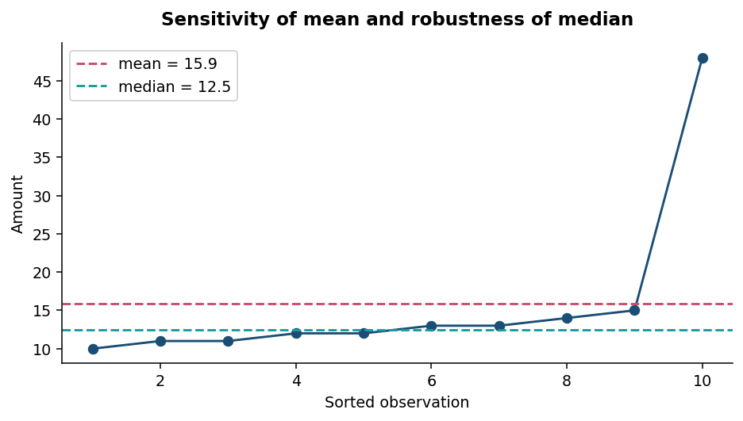
Fig. 153 شکل ۱۰ـ۴. اثر یک مقدار دورافتاده بر میانگین در برابر پایداری نسبیِ میانه؛ این پایداری مطلق و بدون شرط نیست.#
۱۰ـ۶. محاسبهٔ دستیِ میانه، MAD و نمرهٔ مقاوم#
در دادهٔ مرتبشدهٔ بالا، دو مقدار میانی ۱۲ و ۱۳ هستند؛ پس \(m=12.5\). قدرمطلق فاصلهها از میانه به ترتیب \(2.5,1.5,1.5,0.5,0.5,0.5,0.5,1.5,2.5,35.5\) است. پس از مرتبکردن این فاصلهها، دو مقدار وسط هر دو ۱٫۵ بوده و بنابراین \(MAD=1.5\). نمرهٔ مقاوم اصلاحشده با ضریب تقریباً \(0.67449\) چنین است:
ضریب یادشده برای ارتباط مقیاس MAD با انحراف معیار در توزیع نرمال به کار میرود؛ این عدد برای دادهٔ دلخواه «احتمال آماری ناهنجاری» تولید نمیکند. اگر \(MAD=0\)، تقسیم مجاز نیست؛ برنامهٔ همراه عمداً خطا میدهد تا دانشجو بدون استدلال، ثابت کوچک به مخرج اضافه نکند. در چنین وضعی باید به نوع داده، گردشدگی، تکرار زیاد و روش جایگزین توجه کرد.
مرجع را منجمد کنید: اگر امتیاز یک روز تازه را با میانه و MAD محاسبه میکنیم، آن آمار باید از دورهٔ مرجعِ مجاز استخراج شده باشند. بازبرآورد آنها با استفاده از تمام رکوردهای دورهٔ آزمون بهمعنای نگاه به آینده و تغییر تعریف آزمون است؛ مگر اینکه صریحاً پروتکل بدوننظارتِ برخط با بهروزرسانیِ گذشتهنگر طراحی شده باشد.
۱۰ـ۷. چارکها و حصارهای Tukey: یک مقایسهٔ مکمل#
مرزهای Tukey از \(Q_1\) و \(Q_3\) استفاده میکنند و برای مقادیر بیرون از \([Q_1-1.5IQR,Q_3+1.5IQR]\) علامت بررسی میگذارند، که در آن \(IQR=Q_3-Q_1\). در قرارداد پیشفرض NumPy برای ده عدد نمونه، \(Q_1=11.25\) و \(Q_3=13.75\)، بنابراین \(IQR=2.5\) و حصارها ۷٫۵ و ۱۷٫۵ هستند. پس ۴۸ یک مقدار بیرون از حصار است.

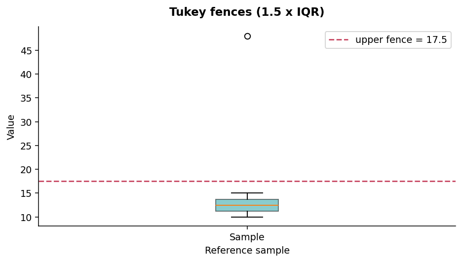
Fig. 154 شکل ۱۰ـ۵. حصار بالایی ۱۷٫۵ در مثال آموزشی؛ علامت «پرت» در نمودار جعبهای اثبات خطا یا تقلب نیست.#
نکتهٔ قرارداد: روش محاسبهٔ چارک برای نمونهٔ کوچک در نرمافزارها ممکن است متفاوت باشد (درونیابی، نیمههای نمونه و مانند آن). بنابراین در حل دستی باید قرارداد را ذکر کنیم. این روش در دادهٔ شدیداً چندوجهی یا جایی که هر گروه مرجع جداگانه دارد، بدون جداسازی زمینه ممکن است هشدارهای بیمعنا بدهد.
۱۰ـ۸. مدل آماری و احتمال دُم: تحت چه فرضی؟#
اگر رفتار عادی را با چگالی \(p(x\mid\theta)\) مدل کنیم، میتوان امتیاز \(s(x)=-\log p(x\mid\theta)\) را تعریف کرد. چگالی پایین به معنای ناسازگاری بیشتر با مدل است، اما در فضای پیوسته «چگالی نقطهای» همان احتمالِ یک بازه نیست. در مدل نرمال تکبعدی، افزایش \(|x-\mu|/\sigma\)، امتیاز منفیِ لگاریتم چگالی را افزایش میدهد. در بُعد بالا، مقدار مطلق چگالی حتی برای نمونههای معمول هم میتواند کوچک شود؛ بنابراین مقایسهٔ خام چگالی میان مدلهایی با ابعاد متفاوت تفسیر آسانی ندارد.

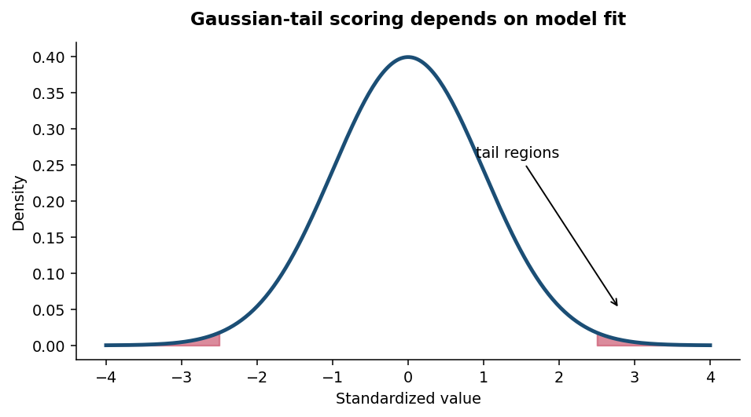
Fig. 155 شکل ۱۰ـ۶. نواحی دُم تحت فرض مدل گاوسی. با تغییر یا شکست فرض توزیع، معنای آستانهٔ دُم تغییر میکند.#
روشهای پارامتری وقتی فرض توزیع قابل دفاع است کارآمدند؛ روشهای ناپارامتری انعطاف بیشتری دارند، ولی انتخاب پهنای باند یا تعداد همسایه به همان اندازه مهم است. در هر دو، اندازهٔ نمونه، آلودگی مرجع و تغییر فرایند تولید داده میتوانند نتیجه را مخدوش کنند.
۱۰ـ۹. فاصلهٔ ماهالانوبیس و شکلِ بیضوی رفتار عادی#
در چند بُعد، فاصلهٔ اقلیدسی همبستگی ویژگیها را نادیده میگیرد. اگر دو ویژگی در دادهٔ عادی تقریباً روی یک خط حرکت کنند، نقطهای که در جهت عمود بر خط جابهجا شده، حتی با فاصلهٔ اقلیدسی متوسط، نامعمول است. فاصلهٔ ماهالانوبیس از میانگین \(\mu\) و ماتریس کوواریانس \(\Sigma\) استفاده میکند:
در نمودار زیر دایرهٔ اقلیدسی و بیضیِ کوواریانس برای یک مقدار مقیاس یکسان رسم شدهاند. در دادهٔ کمنمونه یا ابعاد زیاد، \(\Sigma\) ممکن است نزدیک به تکین باشد؛ کد آموزشی از \(\Sigma+\lambda I\) با \(\lambda>0\) استفاده میکند و نشان میدهد منظمسازی جزئی از قرارداد امتیاز است. تخمین کوواریانس با دادهٔ شدیداً پرت هم میتواند خراب شود و روشهای مقاوم یا نمونهٔ مرجعِ کنترلشده مناسبترند.

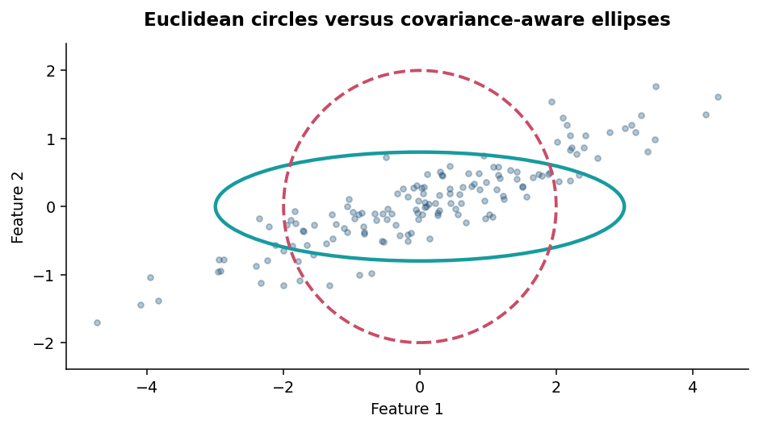
Fig. 156 شکل ۱۰ـ۷. دامنهٔ عادیِ بیضوی در مقابل یک دایرهٔ اقلیدسی؛ تفسیر فاصله به شکل توزیع مرجع وابسته است.#
۱۰ـ۱۰. روش فاصلهای: فاصله تا همسایهٔ kام#
برای دادهٔ چندبعدی \(X=\{x_1,\dots,x_n\}\)، ابتدا یک فاصلهٔ مناسب تعریف میکنیم. امتیاز سادهٔ \(s_k(x)\)، فاصلهٔ نمونه از همسایهٔ \(k\)ام است. اگر خودِ نمونه داخل مرجع باشد، در زمان امتیازدهی آموزش باید خودهمسایگی حذف شود؛ وگرنه نزدیکترین فاصله همواره صفر میشود. برای نمونهٔ جدید، همسایهها از مجموعهٔ مرجعِ گذشته میآیند و خودِ نمونه در آن نیست.
مثال: دادهٔ تکبعدی مرجع \(\{0,1,2,3,4\}\) و نمونهٔ آزمون \(x=7\) است. فاصلههای مرتبشده \(3,4,5,6,7\) هستند؛ در نتیجه \(s_2(7)=4\). برای نقطهٔ \(x=2.5\)، دو فاصلهٔ نخست \(0.5\) و \(0.5\) هستند و \(s_2(2.5)=0.5\). این اختلاف بهسادگی دورافتادگی نقطهٔ اول را نشان میدهد.

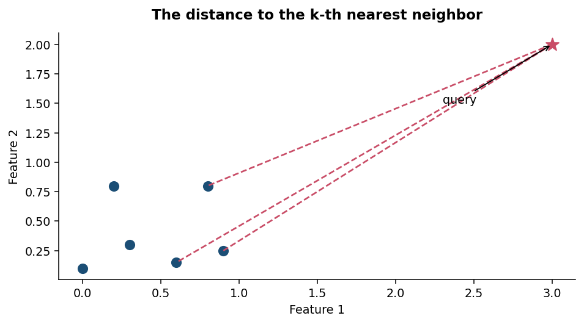
Fig. 157 شکل ۱۰ـ۸. اتصال یک نمونهٔ جدید به نزدیکترین نقاط مرجع؛ فاصلهٔ همسایهٔ سوم یا \(k\)ام، با خطچینها قابل مشاهده است.#
مزیت روش، روشن بودن معنای عدد است. اما در نواحی کمتراکمِ طبیعی، فاصلهٔ همسایه زیاد میشود؛ پس یک الگوریتم فاصلهایِ جهانی ممکن است نقاط عادیِ خوشهٔ پراکنده را بهاشتباه غیرعادی بداند. همچنین در بُعد بالا اختلاف فواصل کوچک میشود و شیوهٔ استانداردسازی و تعریف فاصله اهمیت بسیار مییابد.
۱۰ـ۱۱. از فاصله به چگالی محلی: چرا LOF لازم شد؟#
فرض کنید یک خوشهٔ بسیار فشرده از مشتریان و یک خوشهٔ پراکندهتر از مشتریان دیگر داریم. برای نقطهٔ عادیِ لبهٔ خوشهٔ پراکنده، فاصلهٔ همسایه میتواند از نقطهای غیرعادی در خوشهٔ فشرده بیشتر باشد. برای مقایسهٔ منصفانهتر، باید تراکم خودِ نقطه نسبت به تراکم همسایههایش را اندازه بگیریم. این ایدهٔ امتیاز عامل پرت محلی (Local Outlier Factor, LOF) است.

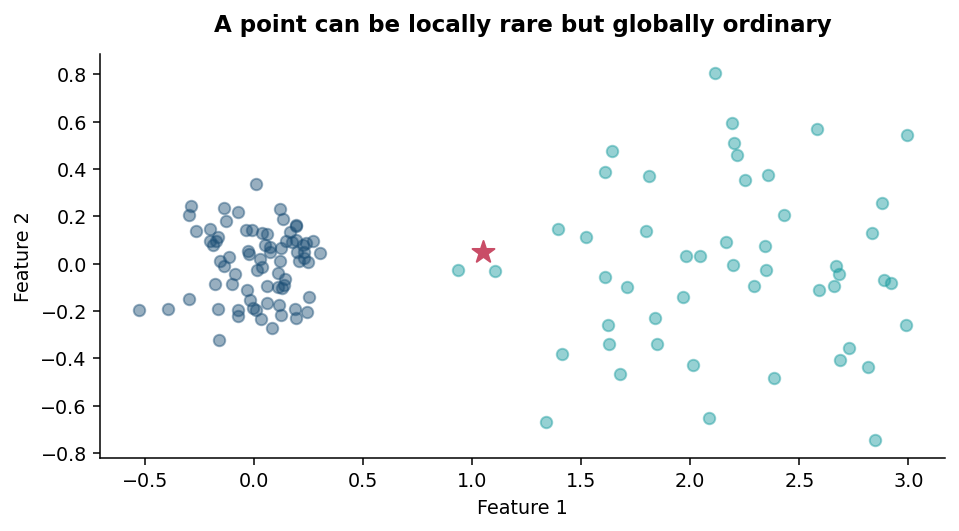
Fig. 158 شکل ۱۰ـ۹. ناحیهٔ متراکم و ناحیهٔ پراکنده در کنار یک نمونهٔ مرزی؛ فاصلهٔ خام همیشه با «غرابت نسبت به همسایگان» یکسان نیست.#
LOF معمولاً حول مقدار نزدیک به یک برای نمونههای دارای تراکم محلی مشابه همسایهها قرار میگیرد. مقدار بیشتر از یک نشاندهندهٔ تراکم محلی پایینتر نسبت به همسایههاست؛ بااینحال عدد یک یک مرز قطعی یا تضمینی برای ناهنجاری نیست و تفسیر آن به انتخاب \(k\) و شکل داده وابسته است. برای نمونهٔ جدید، باید تعریف همسایهها و مرجع ثابت را رعایت کرد؛ پیادهسازی نمونهٔ آموزشیِ ما فقط LOF دروننمونه را محاسبه میکند.
۱۰ـ۱۲. تعریف و حل دستی LOF با شش نقطه#
برای نقطهٔ \(p\)، مجموعهٔ همسایهها را \(N_k(p)\) و فاصلهٔ همسایهٔ \(k\)ام هر نقطهٔ \(o\) را \(kdist(o)\) بنامیم. فاصلهٔ دسترسی:
و سپس:
شش نقطهٔ یکبعدی \(\{0,0.1,0.2,0.3,0.4,1.8\}\) را با \(k=2\) در نظر بگیرید. برای \(p=1.8\) همسایهها \(0.4\) و \(0.3\) هستند. فاصلههای دسترسی بهترتیب \(1.4\) و \(1.5\) میشوند، پس \(lrd(1.8)=1/1.45\approx0.689655\). دو همسایهٔ یادشده هر کدام در این مثال دارای \(lrd\approx6.666667\) هستند و بنابراین:
این مقدار بسیار بیشتر از یک است، زیرا نقطهٔ ۱٫۸ بسیار کمتراکمتر از همسایگانش دیده میشود. جزئیات فنی مهم: پیادهسازی آموزشی دقیقاً \(k\) همسایهٔ مرتبشده را میگیرد و در تساوی فاصله، ترتیب ورودی را ملاک میگذارد؛ در تعریف کلاسیک LOF ممکن است تمام نقاط با فاصلهٔ مساویِ \(k\)ام وارد همسایگی شوند. در نتیجه اعداد پیادهسازیِ آموزشی لزوماً با تمام کتابخانهها یکسان نیستند.

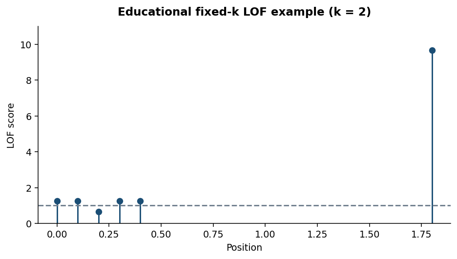
Fig. 159 شکل ۱۰ـ۱۰. امتیاز LOF در مثال ششنقطهای با قرارداد دقیقاً دو همسایه؛ مقدار ۹٫۶۷ برای نقطهٔ دورافتاده.#
۱۰ـ۱۳. انتخاب k و نقاط ضعفِ روشهای مجاورت#
انتخاب \(k\) کوچک حساسیت به نویز و تغییر تصادفی همسایگان را بیشتر میکند. انتخاب \(k\) بزرگ ممکن است ویژگیهای محلی را محو کند و روش را به یک معیار تقریباً جهانی تبدیل کند. راه بهتر، بررسی چند مقدار معقول \(k\) روی مجموعهٔ اعتبارسنجی مناسب یا سنجش پایداری رتبهٔ موارد با اولویت بالا در دامنهای از \(k\)هاست. اگر دادهٔ مرجع بسیار بزرگ باشد، محاسبهٔ همهٔ فاصلهها مرتبهٔ زمانی و حافظهٔ زیادی میطلبد؛ نمایههای همسایگی یا تقریب مناسب باید جداگانه ارزیابی شوند.
وجود ویژگی دستهای، مقیاسهای متفاوت و دادهٔ گمشده تعریف «نزدیک» را دشوار میکند. بهخصوص فاصلهٔ اقلیدسی روی کدگذاری عددیِ یک متغیر اسمی، لزوماً معنای واقعی ندارد. نرمالسازی یا تبدیل ویژگی باید فقط با دادهٔ مجازِ آموزش برازش شود و بعد بدون نگاه به آزمون روی بقیه اعمال شود.
۱۰ـ۱۴. ناهنجاری زمینهای: «با چه گروهی مقایسه کنیم؟»#
در مسئلهٔ تراکنشها، دو گروه مشتری سطح مبلغ بسیار متفاوتی دارند. اگر میانهٔ مبالغ مشتریان خرد تقریباً ۲۷ واحد و مشتریان کسبوکار حدود ۱۴۸ واحد باشد، مبلغ ۱۰۰ واحد برای گروه اول دورتر از مرکز گروه است، اما برای گروه دوم چنین نیست. این مقادیر تقریبی فقط برای شهودند و به توزیع مرجع و بذر تولید داده وابستهاند. بهجای یک امتیاز جهانی، یک امتیاز سادهٔ زمینهای تعریف میکنیم:
نقطهٔ قوت این تعریف، توضیحپذیری آن است. اما با گروههایی که اندازهٔ خیلی متفاوت، پراکندگی زیاد یا زمینهٔ ناشناخته دارند، باقیماندهٔ خامِ مبلغ هم قابل مقایسهٔ جهانی نیست. برای کار واقعی، بهتر است در هر گروه مقیاس مقاوم را نیز برآورد کنیم، یا امتیازها را جداگانه رتبهبندی کنیم، به شرط داشتن دادهٔ مرجع کافی. در فایل Python، حالت زمینهٔ دیدهنشده عمداً خطا میدهد؛ نسبت دادن بیتوضیح یک گروه جدید به مرجع قدیمی گمراهکننده است.

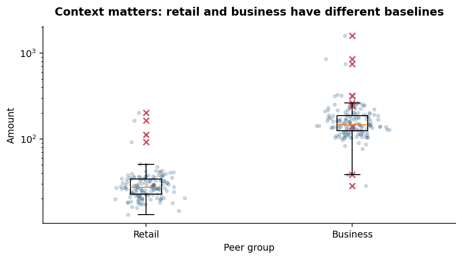
Fig. 160 شکل ۱۰ـ۱۱. توزیع مبالغ در دو گروهِ ساختگی با محور لگاریتمی؛ نقاط ضربدری، موارد تزریقشده برای ارزیابی آموزشی هستند.#

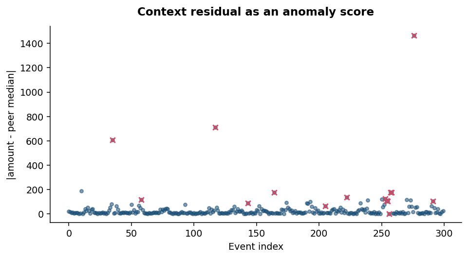
Fig. 161 شکل ۱۰ـ۱۲. باقیماندهٔ مبلغ از میانهٔ گروه مرجع؛ برخی موارد تزریقشده برجسته میشوند، اما همهٔ آنها لزوماً در بالاترین رتبه نیستند.#
نکتهٔ اخلاقی: گروهبندیِ مشتریان از لحاظ علمی یک «متغیر زمینه» است؛ کاربرد آن در تصمیمهای حساس باید با قواعد حفاظت داده، محدودیت استفاده از ویژگیهای حساس، بررسی تبعیض و حق اعتراض انسانی همراه باشد. امتیاز آزمایشگاهی را نباید برای محرومکردن خودکار افراد به کار برد.
۱۰ـ۱۵. ناهنجاری جمعی: چرا تشخیص تکنقطهای کافی نیست؟#
در یک حسگر، یک قلهٔ بزرگ در یک لحظه شاید خطای لحظهای باشد؛ ولی بالا رفتن دما به اندازهٔ ۱٫۵ واحد برای شش نوبت متوالی شاید مهمتر باشد. اگر آستانهٔ فردی ۳ واحد باشد، هیچکدام از شش مشاهدهٔ دوم هشدار نمیگیرد. بااینحال میانگین یک پنجره یا انباشت شواهد میتواند آن تغییر تدریجی را نشان دهد. این مسئله را باید در قالب واحد توالی یا بازه تعریف کنیم؛ در غیر این صورت، ارزیابی و شمارش هشدار نادرست میشود.

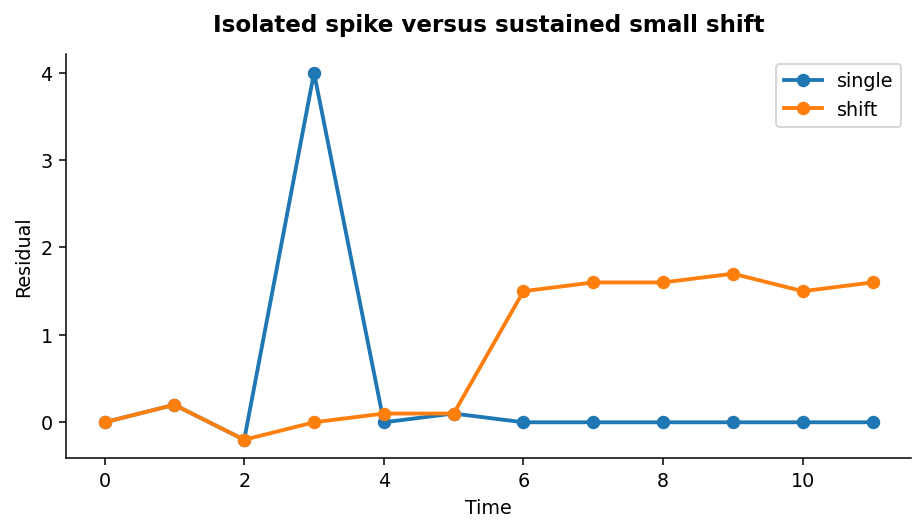
Fig. 162 شکل ۱۰ـ۱۳. یک قلهٔ تیز در برابر یک تغییر کوچک اما پایدار؛ ابزار مناسب برای این دو لزوماً یکسان نیست.#
روش پنجرهای ساده:
\(w\) طول پنجره و \(\mu_0\) مرجعِ دورهٔ عادی است. تعریف علّی (causal) فقط از \(x_1,\ldots,x_t\) در لحظهٔ \(t\) استفاده میکند. یک میانگین متقارن با دادهٔ آینده ممکن است برای تحلیل پس از واقعه مناسب باشد، اما نباید بهعنوان سامانهٔ هشدار برخط آزموده شود. برای \(t<w-1\) امتیاز هنوز تعریف نشده، نه اینکه «صفر و عادی» باشد؛ کد همراه مقدار NaN قرار میدهد.

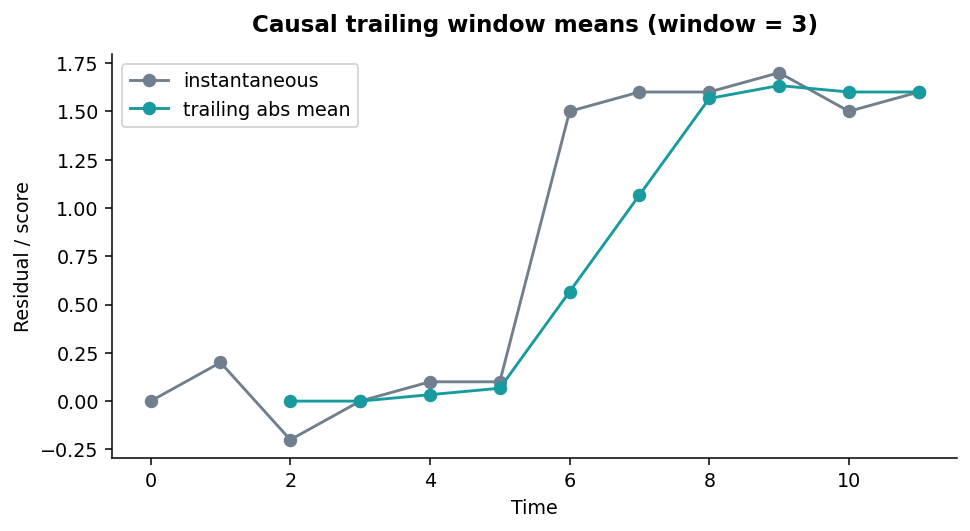
Fig. 163 شکل ۱۰ـ۱۴. مقایسهٔ سیگنال خام و امتیاز میانگینِ دنبالهدارِ سهنمونهای؛ هموارسازی میتواند قلههای تکلحظهای را نیز کوچک کند.#
۱۰ـ۱۶. CUSUM: جمعکردن شواهد کوچک در زمان#
روش مجموع تجمعی یکطرفه (One-sided CUSUM) برای پایش افزایش پایدارِ یک متغیر قابل استفاده است. برای مقادیر با مقیاس معلوم و مرجع \(\mu_0\)، آمار مثبت را به شکل زیر مینویسیم:
\(\delta\ge0\) عدد تحملِ نوسان معمول است و آستانهٔ هشدار \(h\) باید براساس نرخ هشدار کاذب و هزینهٔ تأخیر تنظیم شود. در نمونهٔ دستی \(x=[0,1,2]\)، با \(\mu_0=0\) و \(\delta=0.5\) داریم \(S_1=0\)، \(S_2=0.5\) و \(S_3=2\). به این ترتیب شواهد مثبتِ پیاپی جمع میشوند؛ اما در برابر تغییر رو به پایین باید نسخهٔ منفیِ مناسب یا تعریف متقارن استفاده کرد.

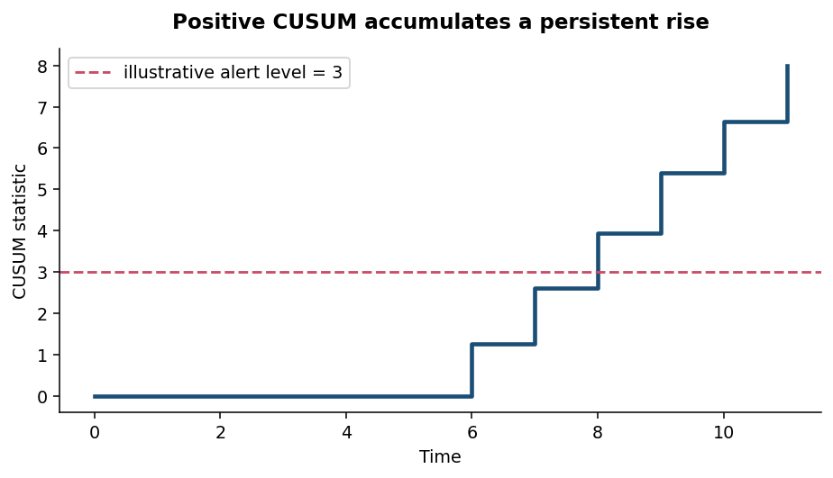
Fig. 164 شکل ۱۰ـ۱۵. افزایش CUSUM در یک دنبالهٔ تغییر یافته و یک خط هشدارِ صرفاً نمایشی؛ آستانهٔ ۳ در این تصویر کالیبره نشده است.#
CUSUM و ابزارهای تغییرنقطه، مکمل تشخیص پرتاند؛ این بخش برای پیوند موضوع با پایش سامانهها به جزوه افزوده شده و برگرفتهٔ مستقیمی از بخشهای اصلی فصل ۱۱ Han یا فصل ۹ Tan نیست. در کاربرد صنعتی، وابستگی زمانی، روند، فصلمندی و تأخیر ثبت باید قبل از انتخاب \(\delta\) و \(h\) مدلسازی شوند.
۱۰ـ۱۷. روشهای بازسازی: هرچه بد بازسازی میشود، غیرعادیتر است؟#
فرض کنیم بیشتر دادههای عادی روی یک زیرفضای کمبعد قرار دارند. یک مدل مانند PCA یا تجزیهٔ ماتریس، ساختار غالب را میآموزد و مشاهدهٔ جدید را با بازسازی \(\widehat x\) تقریب میزند. امتیاز رایج:
بهطور شهودی، اگر نقطهای از فضای آموختهشده بسیار دور باشد، خطای بازسازی بزرگ میشود. ولی خطای بازسازی بالا فقط یکی از تعریفهای ناهنجاری است. بعضی نقاط غیرعادی ممکن است روی زیرفضای اصلی هم باشند و خوب بازسازی شوند؛ از سوی دیگر یک الگوی تازهٔ مجاز ممکن است خطای زیاد داشته باشد. ظرفیت مدل، انتخاب تعداد مؤلفه و آلودگی دادهٔ آموزش نیز بر خروجی مؤثر است.

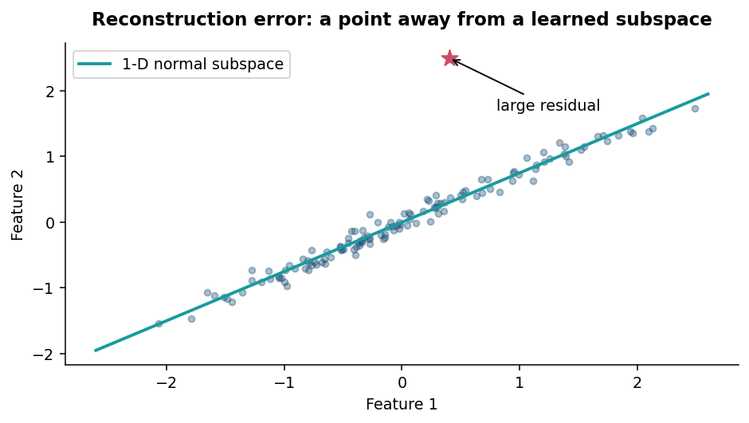
Fig. 165 شکل ۱۰ـ۱۶. زیرفضای یکبعدیِ مرجع و نقطهای با خطای بازسازی زیاد؛ جهت خطا ممکن است از اندازهٔ خام ویژگیها مهمتر باشد.#
برخلاف فصلهای یادگیری عمیق، اینجا هدف ساخت شبکهٔ پیچیده نیست؛ منظور فهم اصل کشف فشردهسازی یا بازسازی نامعمول است. یک Autoencoder عمیق نیز تنها در صورتی قابل دفاع است که دادهٔ کافی و آزمایش خارج از نمونه داشته باشد و نسبت به روش سادهتر مزیت پایدار نشان دهد.
۱۰ـ۱۸. روشهای مبتنی بر خوشه و طبقهبندی یککلاسه#
از فصلهای هشتم و نهم آموختیم که برخی الگوریتمها گروههای متراکم را کشف میکنند. یک برداشت ساده از ناهنجاری خوشهای، «نقطهٔ بسیار دور از مرکز خوشه» یا «عضو خوشهٔ بسیار کوچک» است. اما خوشهٔ کوچک همیشه ناهنجار نیست؛ ممکن است یک زیرجمعیت اقلیتِ کاملاً معتبر باشد. همچنین DBSCAN برچسب نویز تولید میکند، ولی نویز آن نتیجهٔ انتخاب \(\varepsilon\) و min_samples است، نه تشخیص قطعیِ بدرفتاری.
روشهای طبقهبندی یککلاسه (One-class classification) تلاش میکنند مرز منطقهٔ معمول را از نمونههای مرجع بیاموزند. One-class SVM نمونهای از این خانواده است. مرز آموختهشده به نوع kernel، تنظیم منظمسازی و آلودگی دادهٔ مرجع حساس است. در این جزوه فرمول آموزشی نمره و ارزیابی را نگه میداریم و استفادهٔ تولیدی از این روشها را به آزمایش جداگانه با کتابخانهٔ معتبر موکول میکنیم.
۱۰ـ۱۹. جداسازی تصادفی: ایدهٔ Isolation Forest#
در Isolation Forest ایده این است که نمونهای که از سایر دادهها دورافتاده است، در درختهایی با تقسیمهای تصادفی ممکن است با تعداد تقسیم کمتری جدا شود. یک امتیاز استاندارد از طول مسیر متوسط \(E[h(x)]\) و ضریب نرمالسازی وابسته به اندازهٔ زیرنمونه استفاده میکند. بهصورت شهودی، هرچه مسیر کوتاهتر، نمونه غیرعادیتر؛ ولی «کوتاه بودن» به هندسه، ویژگیهای موجود، اندازهٔ نمونه و تصادفیسازی وابسته است.

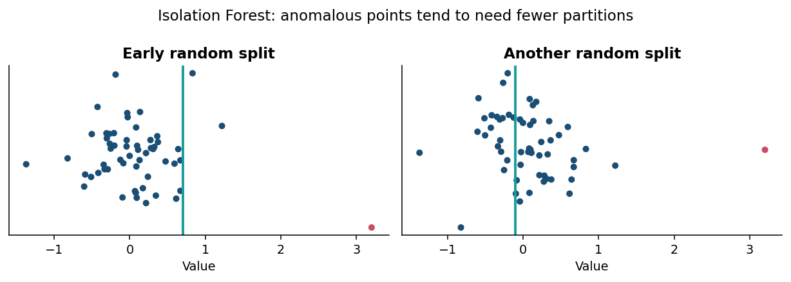
Fig. 166 شکل ۱۰ـ۱۷. دو تقسیم تصادفیِ فرضی؛ هدف نمایش شهود مسیر جداسازی است، نه اجرای کامل الگوریتم جنگل.#
روش جداسازی برای دادهٔ عددی با حجم نسبتاً زیاد گزینهٔ عملی مشهوری است، اما تفسیر آن با یک مثال یکبعدی کافی نیست. بدون معیار ارزیابی مناسب، برتری پیشفرضی نسبت به روش فاصلهای یا مقاوم ندارد. کد پایهٔ این فصل Isolation Forest را از صفر پیاده نمیکند؛ اگر دانشجو از نسخهٔ کتابخانهای استفاده کند باید قرارداد امتیازدهی (کدام جهت غیرعادیتر است) و مقدار تصادفی را بهدقت ثبت کند.
۱۰ـ۲۰. وقتی داده بُعد بالا دارد#
در بُعد بالا، فاصلهٔ اقلیدسی میتواند تمایزبخشی خود را از دست بدهد، کوواریانس ناپایدار شود و نمونهٔ مرجع برای تخمین چگالی کافی نباشد. برای نمونهٔ \(n\) کوچک و بُعد \(d\) بزرگ، ماتریس کوواریانس نمونهای میتواند تکین شود؛ به همین علت در کد فاصلهٔ ماهالانوبیس منظمسازی میکنیم. راهکارهای قابل بررسی: انتخاب ویژگی با دانش دامنه، زیرفضاهای مرتبط، نمایشهای کمبعد با ارزیابی مستقل، اجماعِ چند امتیاز و مدلهای ساختاری.
دام رایج: اگر ویژگیها را با آگاهی از همهٔ دادههای آزمون انتخاب کنیم و بعد روی همان آزمون روش را بسنجیم، حتی بدون برچسب نیز اطلاعات آینده را وارد آموزش کردهایم. همچنین اگر رویداد نادر فقط در یک زیرفضا آشکار شود، مدل کلیِ تمامی ویژگیها ممکن است آن را پنهان کند. این نکته پیوند مستقیمی با خوشهبندی زیرفضایی فصل نهم دارد.
۱۰ـ۲۱. ارزیابی عملی: معیارها باید با هزینه و ظرفیت سازگار باشند#
در سامانههای واقعی، فقط تعداد کمی از موارد امکان بررسی دستی دارند. در Precision@\(k\)، از میان \(k\) مورد بالای فهرست چند مورد حقیقتاً مربوط بودهاند؟ و در Recall@\(k\)، چند مورد از تمام موارد واقعی را یافتهایم؟
که \(P\) تعداد کل موارد مثبت تأییدشده در مجموعهٔ ارزیابی است. اگر \(P=0\)، Recall تعریفپذیر نیست؛ کد ما None برمیگرداند تا وانمود نکند صفر یا یک است. در یک مثال چهاررکوردی با حقیقت \([0,1,0,1]\) و امتیاز \([0.1,0.9,0.2,0.8]\)، دو امتیاز نخست هر دو مثبتاند، پس \(Precision@2=1\) و \(Recall@2=1\).

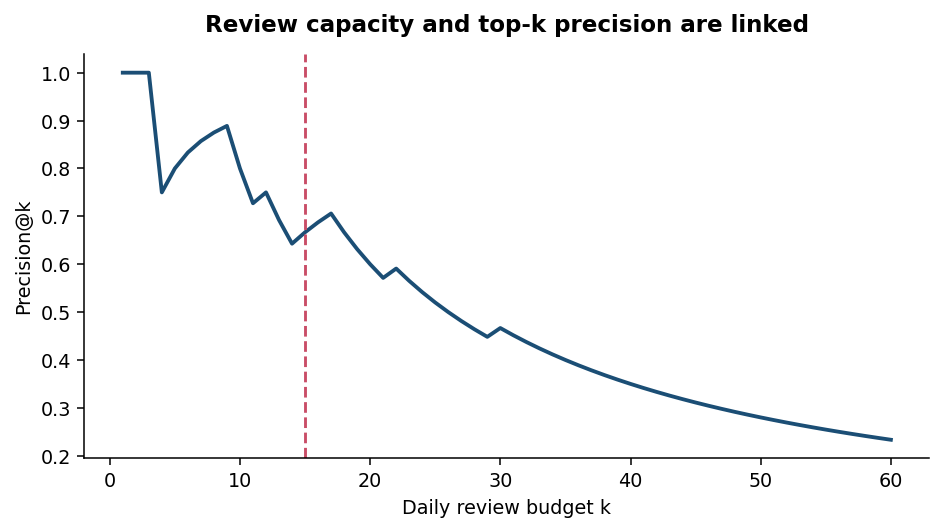
Fig. 167 شکل ۱۰ـ۱۸. تغییر Precision@\(k\) با ظرفیت بررسی در دادهٔ ساختگیِ همین جزوه؛ نوسان به تعداد و ترتیب موارد تزریقشده وابسته است.#
در فایل ۳۰۰تایی ساختهشده، ۱۵ رویداد با برچسب ساختگیِ غیرعادی وجود دارد. امتیاز زمینهای ساده با انتخاب ۱۵ مورد اول، در اجرای بذرِ ثبتشده ۱۰ مورد از ۱۵ مورد را مییابد: \(Precision@15=10/15\approx0.667\) و \(Recall@15=10/15\approx0.667\). این عملکرد واقعی بازار، صنعت یا روش LOF نیست؛ فقط نتیجهٔ دادهٔ همین مثال است. تفاوت دو شمارنده وقتی رخ میدهد که بودجهٔ بررسی با تعداد کل مثبتها برابر نباشد.
۱۰ـ۲۲. ماتریس خطا، آستانه و هزینهٔ هشدار#
با انتخاب \(\tau\)، پیشبینیها مثبت یا منفی میشوند؛ سپس چهار شمارش \(TP,FP,FN,TN\) را محاسبه میکنیم. در مسئلهٔ ناهنجاریهای بسیار نادر، Accuracy میتواند کاملاً گمراهکننده باشد: سامانهای که همه را عادی بداند و نرخ واقعی ناهنجاری یک درصد باشد، دقت ۹۹ درصدی ظاهری دارد و هیچ ناهنجاری را پیدا نمیکند. برای انتخاب آستانه لازم است نرخِ هشدار کاذب، نرخِ از دستدادن رویداد مهم، هزینهٔ بررسی، ظرفیت نیروی انسانی و تأخیر تشخیص را با هم ببینیم.
مدل آموزشیِ هزینه را میتوان بهصورت \(L(\tau)=c_{FP}FP(\tau)+c_{FN}FN(\tau)\) نوشت. در شکل، برای نمایش مفهوم، \(c_{FP}=1\) و \(c_{FN}=10\) فرض شدهاند؛ این اعداد سیاست واقعی یک سازمان نیستند. آستانه باید روی دادهٔ اعتبارسنجی انتخاب شود؛ بعد همان آستانه، بدون تنظیم مجدد، روی آزمون مستقل گزارش شود. اگر آستانه را با دیدن نتیجهٔ آزمون عوض کنیم، آزمون دیگر مستقل نیست.

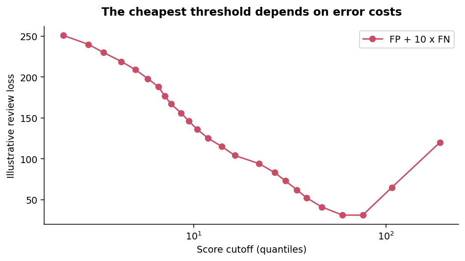
Fig. 168 شکل ۱۰ـ۱۹. مثال هزینهٔ فرضی برای آستانههای مختلف؛ بهترین نقطه به وزن هزینهها و فراوانی رویدادها وابسته است.#
در ارزیابی ناهنجاری، مبنای حقیقت خود یک مسئله است: هر پروندهٔ بررسینشده نباید منفی تلقی شود و برچسبی که فقط برای موارد پرامتیاز جمعآوری شده، برای سنجش همهٔ جمعیت سوگیری انتخاب دارد. دادهٔ ارزیابی بهتر است نمونهبرداری شفاف از موارد بررسیشده و بررسینشده، بازهٔ زمانی و پروتکل کارشناسی را گزارش کند. در صورت امکان فاصلهٔ اطمینانِ معیارها را با بازنمونهگیریِ متناسب با وابستگی حسابها برآورد کنیم.
۱۰ـ۲۳. طراحی آزمایش درست: زمان، حساب و آلودگی مرجع#
سه مرز را باید مشخص کنیم: دادهٔ مرجع برای یادگیری رفتار عادی، اعتبارسنجی برای انتخاب ویژگی/پارامتر/آستانه و آزمون مستقل برای گزارش عملکرد. اگر حسابی در چند تراکنش حضور دارد، جداسازی تصادفیِ تراکنشها ممکن است ویژگیِ همان حساب را در دو سوی مرز وارد کند؛ برای ادعای تعمیم به حسابِ تازه، باید جداسازی در سطح حساب انجام شود. برای ادعای تشخیص آینده، مرز زمانی ضروری است و استانداردسازی نباید از دادهٔ آینده بیاموزد.
همزمان باید دربارهٔ آلودگی مرجع صریح باشیم: اگر بخشی از دادهٔ آموزش خود شامل تخلف یا خرابی باشد، مدل ناهنجاری ممکن است آن رفتار را معمول یاد بگیرد. پیشپردازش مقاوم، ممیزی نمونهای، استفاده از دورهٔ مطمئنتر، و ارزیابی حساسیت به میزان آلودگی راهکارهایی هستند؛ هیچکدام تضمین مطلق نمیدهند.
دام ارزیابی با دادهٔ ساختگی: تزریق یک نمونهٔ بسیار بزرگ یا تیز اغلب مسئله را بیشازحد آسان میکند. برای اعتبار واقعی باید علاوه بر قلههای آشکار، موارد مرزی، تغییرات زمینه، رفتارهای جمعی و شکستهای ناشی از تغییر رژیم را نیز در مجموعهٔ آزمایش لحاظ کنیم. ستون حقیقتِ ساختگی برای تولید شکلهای آموزشی باقی میماند و جزو ورودی محاسبهٔ امتیاز نیست.
۱۰ـ۲۴. پایش در طول زمان: رانش، بازآموزی و بازخورد#
مدلی که امروز مناسب است ممکن است پس از تغییر فصل، نرخ ارز، محصولات یا روش ثبت داده دیگر مناسب نباشد. رانش داده (Data drift) یعنی تغییر توزیع ورودی؛ این اتفاق ممکن است ناشی از تغییر کاملاً مجاز باشد. رانش مفهوم (Concept drift) یعنی تغییر رابطهٔ ورودی با مفهومِ مورد نظر یا برچسب. این دو همیشه یکی نیستند. باید نرخ هشدار، پراکندگی امتیازها، سهم هر زمینه، تأخیر تأیید و روند برچسبهای کارشناسیشده پایش شود؛ نه اینکه هر افزایش هشدار را نشانهٔ افزایش تقلب فرض کنیم.

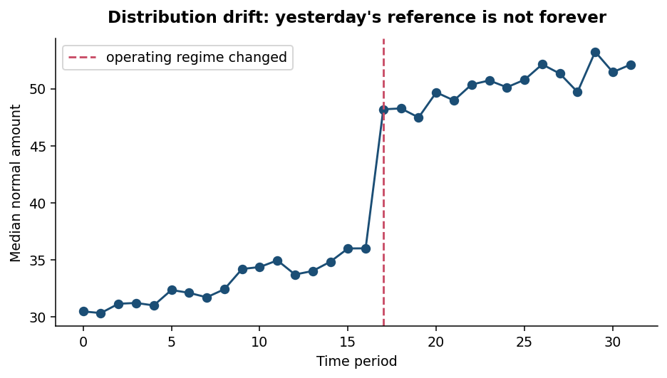
Fig. 169 شکل ۱۰ـ۲۰. تغییر فرضی سطح معمول داده پس از یک تغییر رژیم؛ ثابت ماندن مرجع قبلی میتواند هشدار کاذب زیاد ایجاد کند.#
در بهروزرسانی دورهای، ابتدا دلیل تغییر را بررسی میکنیم و سپس مدل یا آستانهٔ جدید را با دادهٔ تازه اعتبارسنجی میکنیم. نباید خروجی همان مدل را بدون بازبینی بهعنوان «برچسب صحیح» برای یادگیری بعدی مصرف کرد، زیرا حلقهٔ خودتأییدکننده شکل میگیرد. همچنین دادهٔ حساس، کنترل دسترسی و ثبت تصمیم انسانی باید در سامانهٔ واقعی از ابتدا طراحی شوند.
۱۰ـ۲۵. کارگاه Python و راهنمای تفسیر خروجیها#
فایل chapter10_examples.py برای اجرای مستقل با NumPy تهیه شده است. این برنامه دارای توابع مقاوم، فاصلهای، LOF با قرارداد آموزشیِ دقیقاً \(k\) همسایه، فاصلهٔ ماهالانوبیسِ منظمشده، نمرهٔ زمینهای، پنجرهٔ علّی، CUSUM و معیارهای Precision@\(k\) و ماتریس خطاست. فایل chapter10_examples.ipynb همان محاسبات را در قالب بخشبندیشده همراه شکل و توضیح اجرا میکند. برنامه به شبکه، سرویس آنلاین یا مدل ازپیشدانلودشده نیاز ندارد.
در آزمایش آموزشی با بذر ثابت، مقادیر زیر باید ظاهر شوند: \(median=12.5\)، \(MAD=1.5\)، \(M(48)\approx15.9629\)، حصار Tukey برابر \([7.5,17.5]\)، \(LOF(1.8)\approx9.6667\)، تعداد ۳۰۰ رویداد و ۱۵ موردِ تزریقشده؛ برای امتیاز زمینهای ساده، در ۱۵ هشدار نخست ۱۰ مورد مطابق حقیقت ساختگی است. از این نتایج نباید ادعای بهینگی الگوریتم در یک مسئلهٔ واقعی استنتاج کرد.
تفاوت میان روشها را آگاهانه حفظ کنید: robust_z برای مرجع با MAD صفر خطا میدهد؛ lof_fixed_k صرفاً دادهٔ موجود در آموزش را امتیاز میدهد؛ contextual_score برای گروه ندیده خطا میدهد؛ scan_window_mean برای سطرهای آغازین مقدار ناموجود دارد؛ و دادهٔ آزمون نباید برای تنظیم آستانه وارد شود. این تصمیمها، محدودیتهای صریح و قابل آزموناند، نه خطاهای برنامه.
# After extracting the downloadable source ZIP (or placing the files together):
python chapter10_examples.py
python -m unittest -v test_chapter10_examples.py
# Optional Jupyter notebook:
jupyter notebook chapter10_examples.ipynb
۱۰ـ۲۶. تمرینهای مفهومی، محاسباتی و پروژهٔ کوتاه#
تمرینهای مفهومی
تفاوت ناهنجاری، دادهٔ غلط، رخداد نادر و تقلب را با چهار مثال متفاوت توضیح دهید.
چرا در بسیاری از کاربردها انتخاب «واحد مشاهده» از انتخاب الگوریتم مهمتر است؟
برای یک بانک، ناهنجاری تراکنش و ناهنجاری حساب چه تفاوتی دارند؟
سه موقعیت واقعی پیشنهاد کنید که در آن یک نقطه در کل داده عادی ولی در زمینهٔ خودش غیرعادی باشد.
چرا ناهنجاری جمعی ممکن است با آستانهٔ مستقل هر نمونه دیده نشود؟
به چه دلیل امتیاز LOF و امتیاز Isolation Forest را نمیتوان مستقیماً احتمال تقلب تعبیر کرد؟
هنگام وجود دو گروهِ طبیعی با پراکندگی مختلف، روش kNN جهانی چه خطاهایی ایجاد میکند؟
تفاوت Novelty detection با کشف Outlier در مرجعی که خودش آلوده است چیست؟
چرا تنظیم آستانه روی دادهٔ آزمون موجب بیشبرازشِ ارزیابی میشود؟
در یک کاربرد حساس، چه شواهدی پیش از تصمیم خودکار دربارهٔ یک فرد لازم است؟
تمرینهای عددی
برای ده مقدار نمونهٔ ۱۰ـ۶، میانگین، میانه و MAD را دستی بازسازی کنید.
برای همان داده، نمرهٔ مقاوم ۱۴ و ۴۸ را مقایسه کنید.
چارکها و حصارهای Tukey را با قرارداد NumPy و یک قرارداد دیگر محاسبه و تفاوت را توضیح دهید.
برای مرجع \(\{0,1,2,3,4\}\)، امتیاز دومین همسایهٔ ۷ و ۲٫۵ را حساب کنید.
برای نقاط \(\{0,0.1,0.2,0.3,0.4,1.8\}\) با \(k=2\)، فاصلههای دسترسی و LOF نقطهٔ ۱٫۸ را بازسازی کنید.
سه نقطهٔ دوبعدی با کوواریانس ناهمسان بسازید و تغییر رتبهٔ فاصلهٔ اقلیدسی و ماهالانوبیس را بررسی کنید.
برای \([0,1,2]\)، CUSUM را با \(\delta=0.5\) و سپس \(\delta=1.2\) حساب و مقایسه کنید.
برای دو پنجرهٔ علّی با طول ۳ و ۵، تأخیر آشکارسازی یک افزایش پایدار را مقایسه کنید.
اگر \(TP=6,FP=4,FN=3,TN=87\) باشد، Precision، Recall، F1 و نرخ هشدار کاذب را محاسبه کنید.
در مثال هزینهای \(c_{FP}=1,c_{FN}=10\) دو آستانه با \((FP,FN)=(10,1)\) و \((1,3)\) را مقایسه کنید.
تمرینهای کدنویسی و پژوهشی
در فایل CSV، بررسی کنید کدام حسابها چند رویداد دارند و چرا تقسیم سطرها به آموزش و آزمون میتواند نشت ایجاد کند.
امتیاز زمینهای را با MAD هر گروه مقیاس کنید؛ برای MAD صفر قرارداد منطقی و آزمون بنویسید.
Precision@\(k\) را برای \(k=5,10,15,30,50\) بسنجید و منحنی را تفسیر کنید.
مقدار \(k\) را در LOF آموزشی از ۲ به ۳ افزایش دهید و تغییر رتبهها را بررسی کنید.
یک رویداد زمینهای را به داده اضافه کنید که مبلغش از بسیاری رویدادها کمتر است ولی نسبت به گروهش دورافتاده است.
در سیگنالهای JSON، پنجرهٔ ۲، ۳ و ۴ را مقایسه کنید؛ تأخیر و هشدار کاذب را گزارش کنید.
مرجع زمانی نخست را آلوده کنید و ببینید میانه و نمرهٔ زمینهای چقدر تغییر میکنند.
امتیاز فاصلهٔ ماهالانوبیس را برای چند مقدار منظمسازی محاسبه و پایداری رتبه را رسم کنید.
یک طرح انتخاب آستانه با مجموعهٔ اعتبارسنجی مستقل و بودجهٔ ثابت بررسی روزانه پیشنهاد دهید.
در یک گزارش یکصفحهای، خروجی سیستم را نه بهصورت «اثبات تخلف»، بلکه بهصورت «پروندهٔ نیازمند بررسی همراه با دلایل و عدمقطعیت» بازنویسی کنید.
پروژهٔ کوتاه پیشنهادی: با استفاده از events_synthetic.csv، سه روش فاصلهای، مقاوم و زمینهای را پیاده کنید؛ دادهٔ مرجع و ارزیابی را با مرز زمانی مشخص کنید، از برچسب تزریقشده در برازش امتیاز استفاده نکنید، ۱۵ مورد اولِ هر روش را استخراج کنید و برای یک پرونده توضیح دهید چرا رتبهٔ مدل با قضاوت کارشناسی یکسان نیست. گزارش باید دارای جدول مواردِ بازبینی، هشدارهای کاذب، محدودیت روش و یک آزمایش حساسیت باشد.
۱۰ـ۲۷. جمعبندی، ارتباط با فصل یازدهم و منابع#
جمعبندی: کشف ناهنجاری فقط یافتن مقدار بزرگ یا فاصلهٔ زیاد نیست؛ نخست باید مرجع و زمینه تعریف شود و سپس نوع ناهنجاری، امتیاز، ظرفیت بررسی و سیاست آستانه روشن گردد. MAD و چارک، ابزار تکمتغیرهٔ توضیحپذیرند؛ kNN و LOF بر هندسه و چگالی محلی تکیه میکنند؛ ماهالانوبیس ساختار کوواریانس را لحاظ میکند؛ بازسازی و جداسازی نمای دیگری از غیرعادیبودن ارائه میدهند. تحلیل زمانی و ارزیابی بدون نشت اطلاعات تعیین میکند کدام خروجی واقعاً به درد تصمیم میخورد.
پل به فصل یازدهم: هر الگوریتمی بالاخره تعدادی «کشف» اعلام میکند؛ اما اگر هزاران الگو، آستانه یا فرضیه را بیازماییم، چند کشف ظاهراً قوی میتواند صرفاً تصادفی باشد. فصل بعد به اعتبار آماری کشفیات، آزمون فرض، چندگانگی آزمونها و پرهیز از کشفیات کاذب میپردازد؛ در Tan فصل ۱۰ این موضوع مستقلاً مطرح شده است.
منابع علمی اصلی:
Jiawei Han, Jian Pei, Hanghang Tong, Data Mining: Concepts and Techniques, 4th ed., Chapter 11, “Outlier Detection,” Sections 11.1–11.7, printed pp. 557–600.
Pang-Ning Tan, Michael Steinbach, Anuj Karpatne, Vipin Kumar, Introduction to Data Mining, 2nd ed., Chapter 9, “Anomaly Detection,” Sections 9.1–9.9, printed pp. 703–742.
یادداشت بازتولید: تمام شکلها و دادهها برای این فصل ایجاد شدهاند؛ اختلاف ظاهری یا عددی با پیادهسازیهای دیگر ممکن است از قرارداد انتخاب همسایه، روش محاسبهٔ چارک، برآورد مرجع یا پارامترها ناشی شود. نقش فصل آموزشی است و هیچ امتیاز آن مجوزِ تصمیم خودکار دربارهٔ انسانها نیست.